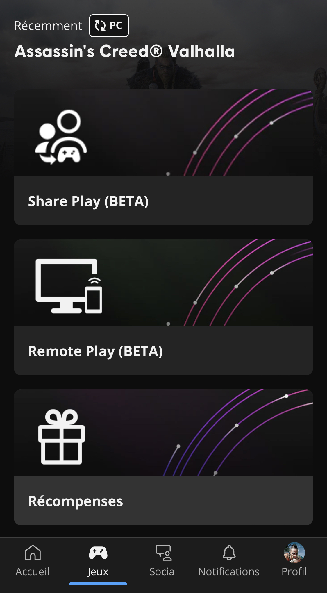

@NicolasComet https://github.com/ncomet
‚òÅÔ∏èüéÆ Streaming Team ‚òÅÔ∏èüéÆ
üñ•Ô∏è → üì∞
üñ•Ô∏è → üéÆüì±

Veille d’un weekend de pont, 10/11/22…
19h17…
Piedrük
Señor Clown Engineer @Ubisoft BDX
ITSec
Chef sécurité @Ubisoft MTL
Nicolas
Senior Cloud Engineer @Ubisoft BDX
~450 noms de domaines
Les mots de passes associés, en clair
2 pros (AD beaucoup répétés)
le reste perso
Rotation AD
Rotation Service Account
--------------→
CTI Team
Mots de passe
uniques et forts
Phrases de passe fortes
MFA Multi-Factor Authentication
Gestionnaires de mots de passe
Hachage (hashing, hash)
Fonction f
f
Déterministe (surjective)
|x| variable → |f(x)| fixe & connue
|x|
|f(x)|
Ne peut pas √™tre invers√©e f(x) → x ?
f(x)
x
"facile" à calculer
préimage: h connu, ∃m / f(m)=h
h connu, ∃m / f(m)=h
2nde préimage: m connu, ∃m' / f(m)=f(m')
m connu, ∃m' / f(m)=f(m')
m-collisions: ∃m1,m2,m3 / f(m1)=f(m2)=f(m3)
∃m1,m2,m3 / f(m1)=f(m2)=f(m3)
MD5
SHA-256
SHA-1
SHA-512
SHA-2, SHA-3, BLAKE2, Keccak-256…
6 ans
40 milliards MD5 hashes/sec
Crédit: Computerphile
Au moins 3 de ces 4 règles de complexité :
au moins 1 (A-Za-z)
au moins 1 chiffre (0-9)
au moins 1 caractère spécial — espaces !
10 - 128 caractères
pas plus de 2 caract√®res identiques d’affil√©e
source : OWASP
Smells
Pas plus de x caractères
Caractères interdits
complexité ≠ entropie
Zéro knowledge (déchiffrement local)
Algo chiffrement robuste (PBKDF2 600 000x)
PBKDF2
Passphrase maîtresse (à mémoriser !)
Générateur mdps forts
(Plugins navigateurs)
(Auto maj mdps)
MFA
MultiFactor Authentication (2FA)
Services importants (e-mails, travail, banque)
Apps smartphone/clés physiques (pas sms!)
Tokens de récupération
Uber MFA bombing 19/09/2022
Trop de r√®gles de mot de passe, changements trop fr√©quents impos√©s →
65% des utilisateurs réutilisent le même mot de passe (Google survey)
SSO
MFA session longues
Gestionnaires de mots de passes
Éducation